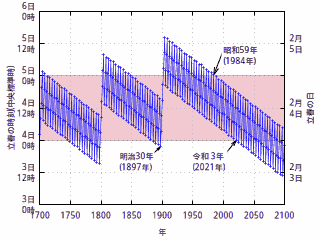
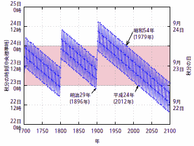

立春も動き出す

時事ネタとして何故か最近よく聞こえてくるので，このブログでも便乗しておく（笑） ちなみに，国立天文台による解説はこちら。
念のために言うと，現行の二十四節気は天球上1 の真太陽2 の位置（太陽黄経）が基準になっている。

立春の場合は「太陽黄経が315度になる瞬間を含む日」である。 これを踏まえて過去の「「太陽黄経が315度になる瞬間」をプロットしたのが以下の図だ。

なんでこんなジグザグになっているかというと，グレゴリオ暦3 の1年は「地球の公転周期とだいたい同じ」なだけで，実際の太陽の公転運動と紐づいているわけではないから。
平年では年ごとに2月5日側にずれていくが，4年ごとの閏年（の翌年）で一気に2月3日側に巻き戻されるのでこんなジグザグになっているわけだ。 しかもジグザグの下限は少しずつ2月3日側にずれていく4。
グレゴリオ暦には「100で割り切れる西暦年のうち400で割り切れない年は（閏年ではなく）平年」というルールがある。 これにより1701年5，1801年，1901年では巻き戻しがなくなり，全体としてジグザグのラインが2月5日側に大きく跳ね上がっているように見えるのである。
一方，2000年は普通に閏年だったので，翌年にジグザグのラインが折り返されている。 それでも2020年までは2月4日の範囲に収まっていたが，閏年を経るたびにジグザグの下限が前日側にシフトしていくため，いよいよ2021年は2月3日にかかってしまった，ということになる。
これからは徐々に2月3日のほうが当たり前になっていくだろう（笑）
もちろんこれは立春だけじゃなくて太陽黄経が基準となる二十四節気全般に言える話で，たとえば秋分についても，2012年（1896年以来）に9月22日になって以降，9月22日になる年が増えていく。

まぁ，簡単に言うと「騒ぐようなこっちゃない」ってことですよ（笑）
ブックマーク
- 今年の節分が2月2日なのは2000年に原因が！？…“子午線のまち”明石・天文科学館の館長が徹底解説｜まいどなニュース
- 「暦」日本史 （再掲載）
- 冬至に関する与太話
- 2021年の暦
- 2021年の祝日・休日に関する注意喚起
参考図書

- 天文年鑑 2021年版
- 天文年鑑編集委員会 (編集)
- 誠文堂新光社 2020-11-24
- 単行本
- 4416620616 (ASIN), 9784416620618 (EAN), 4416620616 (ISBN)
- 評価
天文ファン必携。2021年版。なお，記載されている祝日・休日は改正前のものなのでご注意を。

- 天体物理学
- Arnab Rai Choudhuri (著), 森 正樹 (翻訳)
- 森北出版 2019-05-28
- 単行本
- 4627275110 (ASIN), 9784627275119 (EAN), 4627275110 (ISBN)
- 評価
興味本位で買うにはちょっとビビる値段なので図書館で借りて読んでいたが，やっぱり手元に置いておきたいのでエイヤで買った。まえがきによると，この手のタイプの教科書はあまりないらしい。内容は非常に堅実で分かりやすい。理系の学部生レベルなら問題なく読めるかな。

- 天体の位置計算
- 長沢 工 (著)
- 地人書館 1985-09-01
- 単行本
- 4805202254 (ASIN), 9784805202258 (EAN), 4805202254 (ISBN)
- 評価
B1950.0 分点から J2000.0 分点への過渡期に書かれた本なので情報が古いものもあるが，基本的な内容は位置天文学の教科書として充分通用する。
-
地球を中心とした無限遠の仮想球面を「天球」と呼ぶ。 ↩︎
-
地球の公転軌道は僅かに楕円軌道であるため天球上の（見かけの）太陽の移動速度は季節によって異なる。実際の公転運動に則した天球上の太陽を「真太陽」と呼ぶ。これに対して一定の速度で移動する仮想太陽を「平均太陽」と呼ぶ。 ↩︎
-
厳密にいうと日本の現行暦は「グレゴリオ暦互換」であって「グレゴリオ暦」ではない。「グレゴリオ暦」は西暦ベースだが，日本の現行暦は「神武天皇即位紀元」が基点になっている。まぁ運用上の差異はないので，政治的・宗教的な意図がない限り，両者を区別する必要はないけど。 ↩︎
-
4年ごとの閏年だけでは4年が1,461日となり実際の4年（＝地球公転周期×4）に対して45分ほど過剰補正になる。 ↩︎
-
日本の暦がグレゴリオ暦互換になったのは明治の改暦（1873年，明治6年）からなので，それ以前は意味がない。ちなみに本家グレゴリオ暦は1582年からの運用とされているが，キリスト教圏内でも国や地域によってばらつきがあるらしい。 ↩︎